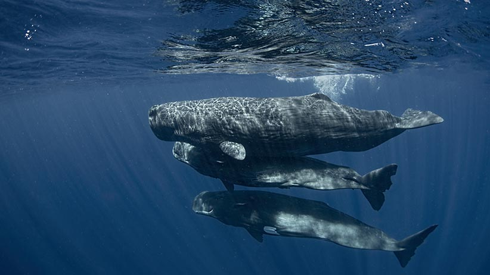

Whale Optimization Algorithm (WOA)¶
A module for the Whale Optimization Algorithm with parallel computing support.
Original paper: Mirjalili, S., Lewis, A. (2016). The whale optimization algorithm. Advances in engineering software, 95, 51-67.
{kind=link}
What can you use?¶
Multi processing: ✔️
Discrete spaces: ✔️
Continuous spaces: ✔️
Mixed Discrete/Continuous spaces: ✔️
Parameters¶
- class neorl.evolu.woa.WOA(mode, bounds, fit, nwhales=5, a0=2, b=1, int_transform='nearest_int', ncores=1, seed=None)[source]¶
Whale Optimization Algorithm
- Parameters
mode – (str) problem type, either
minfor minimization problem ormaxfor maximizationbounds – (dict) input parameter type and lower/upper bounds in dictionary form. Example:
bounds={'x1': ['int', 1, 4], 'x2': ['float', 0.1, 0.8], 'x3': ['float', 2.2, 6.2]}fit – (function) the fitness function
nwhales – (int): number of whales in the population
a0 – (float): initial value for coefficient
a, which is annealed froma0to 0 (see Notes below for more info).b – (float): constant for defining the shape of the logarithmic spiral
int_transform – (str): method of handling int/discrete variables, choose from:
nearest_int,sigmoid,minmax.ncores – (int) number of parallel processors (must be
<= nwhales)seed – (int) random seed for sampling
- evolute(ngen, x0=None, verbose=True)[source]¶
This function evolutes the WOA algorithm for number of generations.
- Parameters
ngen – (int) number of generations to evolute
x0 – (list of lists) initial position of the whales (must be of same size as
nwhales)verbose – (bool) print statistics to screen
- Returns
(dict) dictionary containing major WOA search results
Example¶
from neorl import WOA
import matplotlib.pyplot as plt
#Define the fitness function
def FIT(individual):
"""Sphere test objective function.
F(x) = sum_{i=1}^d xi^2
d=1,2,3,...
Range: [-100,100]
Minima: 0
"""
y=sum(x**2 for x in individual)
return y
#Setup the parameter space (d=5)
nx=5
BOUNDS={}
for i in range(1,nx+1):
BOUNDS['x'+str(i)]=['float', -100, 100]
nwhales=20
#setup and evolute WOA
woa=WOA(mode='min', bounds=BOUNDS, fit=FIT, nwhales=nwhales, a0=1.5, b=1, ncores=1, seed=1)
x_best, y_best, woa_hist=woa.evolute(ngen=100, verbose=1)
plt.figure()
plt.plot(woa_hist['a'], label='a')
plt.plot(woa_hist['A'], label='A')
plt.xlabel('generation')
plt.ylabel('coefficient')
plt.legend()
plt.show()
Notes¶
WOA mimics the social behavior of humpback whales, which is inspired by the bubble-net hunting strategy.
The whale leader is controlled by multiple coefficients, where
ais considered the most important. The coefficientabalances WOA exploration and exploitation. The value ofais annealed “linearly” froma0 > 0to 0 over the course ofngen. Typical values fora0are 1, 1.5, 2, and 4.Therefore, the user should notice that
ngenvalue used within the.evolutefunction has an impact on theavalue and hence on WOA overall performance.ncoresargument evaluates the fitness of all whales in the population in parallel. Therefore, setncores <= nwhalesfor most optimal resource allocation.Look for an optimal balance between
nwhalesandngen, it is recommended to minimize the number ofnwhalesto allow for more updates and more generations.Total number of cost evaluations for WOA is
nwhales*ngen.